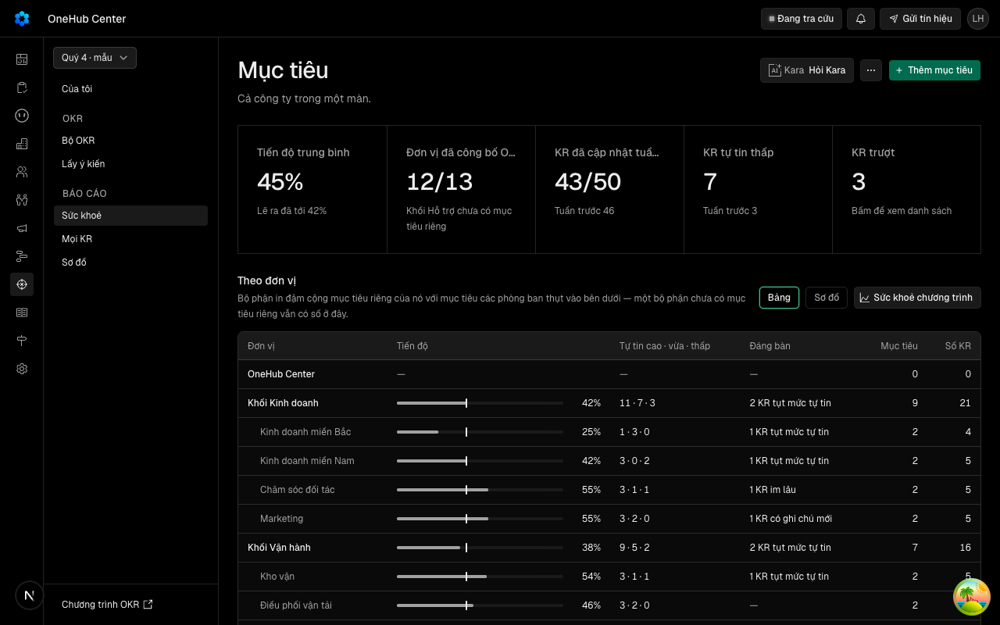

Hôm nay không có lối thẳng tới mọi KR đang trượt — phải đi từng đơn vị; ô số ở Toàn cảnh không bấm được. Tability: All data › Key Results, ô Off track trên trang chủ dẫn thẳng tới đó.
docs/superpowers/specs/2026-10-21-moi-kr-ca-cong-ty-design.md
| Eval | Tiêu chí | Loại | Verdict | run_id | verified_at |
|---|---|---|---|---|---|
| E1 | AC-1 | test | PASS | minted-moi-kr-ca-cong-ty-E1-r3 | 2026-10-22T04:20:47Z |
| E2 | AC-1 | script | PASS | minted-moi-kr-ca-cong-ty-E2-r2 | 2026-10-22T03:53:18Z |
| E3 | AC-2 | test | PASS | minted-moi-kr-ca-cong-ty-E3-r2 | 2026-10-22T03:53:18Z |
| E4 | AC-3 | test | PASS | minted-moi-kr-ca-cong-ty-E4-r2 | 2026-10-22T03:53:18Z |
| E5 | AC-4 | test | PASS | minted-moi-kr-ca-cong-ty-E5-r2 | 2026-10-22T03:53:18Z |
| E6 | AC-5 | test | PASS | minted-moi-kr-ca-cong-ty-E6-r2 | 2026-10-22T03:53:18Z |
| E7 | AC-6 | test | PASS | minted-moi-kr-ca-cong-ty-E7-r2 | 2026-10-22T03:53:18Z |
| E8 | AC-7 | test | PASS | minted-moi-kr-ca-cong-ty-E8-r3 | 2026-10-22T04:20:47Z |
| E9 | AC-8 | test | PASS | minted-moi-kr-ca-cong-ty-E9-r3 | 2026-10-22T04:20:47Z |
| E10 | AC-9 | test | PASS | minted-moi-kr-ca-cong-ty-E10-r3 | 2026-10-22T04:20:47Z |
| E11 | AC-10 | ui-check | PASS | minted-moi-kr-ca-cong-ty-E11-r2 | 2026-10-22T03:53:18Z |
| E12 | AC-7 | script | PASS | minted-moi-kr-ca-cong-ty-E12-r2 | 2026-10-22T03:53:18Z |
AC-1: (cross-layer) Given chu kỳ đang chọn có KR đang trượt mà người xem được thấy, When người mở Báo cáo › Sức khoẻ (`/okr/suc-khoe`), Then hàng ô số đầu trang có ô «KR trượt» mang đúng số KR có tình trạng Trượt trong danh sách Mọi KR của chính người đó; ô là một liên kết tới `/okr/moi-kr?tinhTrangKr=truot` giữ `kyOkr`; bấm nó một lần thì trang Mọi KR mở với bảng chỉ gồm dòng «Trượt», số dòng bằng số trên ô.
AC-1: (cross-layer) Given chu kỳ đang chọn có KR đang trượt mà người xem được thấy, When người mở Báo cáo › Sức khoẻ (`/okr/suc-khoe`), Then hàng ô số đầu trang có ô «KR trượt» mang đúng số KR có tình trạng Trượt trong danh sách Mọi KR của chính người đó; ô là một liên kết tới `/okr/moi-kr?tinhTrangKr=truot` giữ `kyOkr`; bấm nó một lần thì trang Mọi KR mở với bảng chỉ gồm dòng «Trượt», số dòng bằng số trên ô.
AC-2: Given một chu kỳ có mục tiêu đủ các cấp và trạng thái, When gọi `okr.moiKr` không lọc, Then `rows` gồm đúng mọi KR của mục tiêu `cong-bo` cấp OneHub, bộ phận, phòng ban của chu kỳ đó — không KR của mục tiêu nháp (Hỏi-5), đã bỏ, cá nhân (Hỏi-3), hay chu kỳ khác; mỗi dòng mang KR, mục tiêu, đơn vị, người phụ trách KR, tiến độ, vạch kỳ vọng đếm từ ngày công bố của mục tiêu (cùng vạch và cùng tình trạng mà khối «KR của tôi» trả cho cùng KR) và tình trạng tính bằng `tinhTrang` (mục tiêu tham vọng và học tập không bao giờ «Trượt»; KR mốc là `moc-xong`/`moc-chua`); `total` bằng số dòng.
AC-3: Given một OKR mà người xem hẹp không được xem, When người ấy gọi `okr.moiKr`, Then KR của OKR đó không có trong `rows`, không được đếm trong `facetCounts` (nên không vào số của ô «KR trượt»), còn quản trị chương trình gọi cùng chu kỳ thì thấy KR ấy.
AC-4: Given danh sách Mọi KR, When chọn một hay nhiều chip ở hàng chip Tình trạng phía trên bảng (`ToggleGroup` nhiều lựa chọn, như bản mẫu), Then chỉ còn dòng có tình trạng đã chọn, không chip nào được chọn nghĩa là mọi tình trạng, và mỗi chip mang số KR có tình trạng đó trong tập đang lọc theo Đơn vị và Người (không theo chính hàng chip).
AC-5: Given danh sách Mọi KR, When chọn một đơn vị ở mặt lọc Đơn vị, Then chọn một bộ phận cho KR của bộ phận ấy và của mọi phòng ban dưới nó; chọn một phòng ban chỉ cho KR của phòng ban đó; chọn OneHub chỉ cho KR của mục tiêu cấp OneHub.
AC-6: Given danh sách Mọi KR, When chọn một người ở mặt lọc Người phụ trách, Then chỉ còn KR người đó phụ trách — theo người phụ trách KR, không theo chủ mục tiêu.
AC-7: Given trang Mọi KR, When đặt bộ lọc, Then ba mặt (chip Tình trạng, mặt lọc Đơn vị và Người của `DataTable`) ghi lên đường dẫn ở `tinhTrangKr`, `donViKr`, `nguoiKr`; mở thẳng (tải lại) một đường mang cả ba thì bảng ra đúng tập dòng mà `okr.moiKr` trả cho cùng bộ lọc (các mặt theo «và», giá trị trong một mặt theo «hoặc»); đổi chu kỳ ở đầu thanh bên thì bộ lọc giữ nguyên; giá trị không hợp lệ trên đường bị bỏ qua và trang vẫn dựng.
AC-8: Given danh sách Mọi KR đã lọc, When bấm một dòng KR, Then ngăn KR một chỗ (VK7, `useMoNganKr`) mở trên chính trang cho đúng KR đó; đóng ngăn thì đường dẫn còn nguyên bộ lọc và bảng như trước khi mở.
AC-9: Given khu Mục tiêu, When mở `/okr/moi-kr`, Then thanh bên nhóm «Báo cáo» xếp Sức khoẻ · Mọi KR · Sơ đồ và mục Mọi KR sáng; trang có `PageShellTitle` «Mọi KR» và một câu mô tả dựng trong `page.tsx`; các trạng thái ST-moikr-cho, ST-moikr-loi, ST-moikr-chuachuky, ST-moikr-rong, ST-moikr-khongkhop hiện đúng như bảng trạng thái của design doc, tiêu đề trang giữ ở mọi trạng thái.
AC-10: Given phiên đo có dữ liệu mẫu, When chụp Sức khoẻ và Mọi KR (đã lọc Trượt) ở 1280 và 375, Then ở 1280 ô «KR trượt» nằm trong hàng ô số và bảng có cột KR · Đơn vị · Phụ trách · Tiến độ · Tình trạng; ở 375 bảng không tràn ngang, cột Phụ trách và Tiến độ ẩn, tình trạng luôn là chấm kèm chữ.

AC-7: Given trang Mọi KR, When đặt bộ lọc, Then ba mặt (chip Tình trạng, mặt lọc Đơn vị và Người của `DataTable`) ghi lên đường dẫn ở `tinhTrangKr`, `donViKr`, `nguoiKr`; mở thẳng (tải lại) một đường mang cả ba thì bảng ra đúng tập dòng mà `okr.moiKr` trả cho cùng bộ lọc (các mặt theo «và», giá trị trong một mặt theo «hoặc»); đổi chu kỳ ở đầu thanh bên thì bộ lọc giữ nguyên; giá trị không hợp lệ trên đường bị bỏ qua và trang vẫn dựng.
| Khối | Tác tử | Token đầu ra |
|---|---|---|
| S4 round 1 | 29 | 54.899 |
| S4 round 2 | 25 | 35.209 |
| S4 round 3 | 16 | 18.946 |
3 lượt chấm · tổng 109.054 token
chưa gộp vào onehub (nhánh production kho khai)